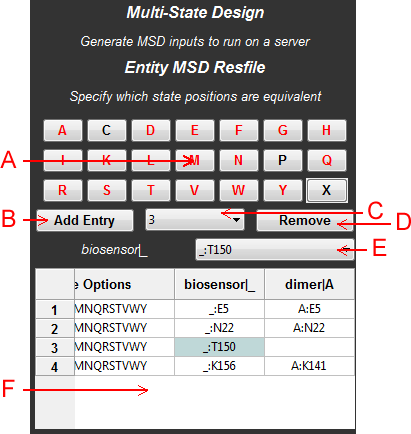
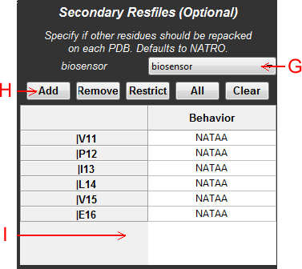
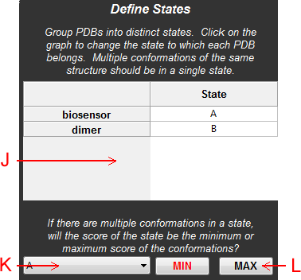
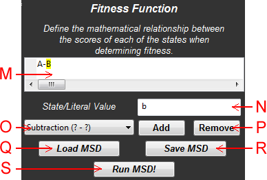

Abstract: The aim of the multi-state design (MSD) panel is to provide an easy-to-use interface for setting up MSD simulations. Please note that PyRosetta does not have MSD bindings, so you must have a server that is capable of running MSD through vanilla C++ Rosetta. Even if Python bindings existed for MSD, you need to be using a parallel-computing environment to run MSD efficiently.

Figure 1: Schematic of the MSD panel, viewing the entity resfile controls
An entity resfile defines which "abstract positions" (numbered from 1) are designable. Each of these positions has a palette of amino acids to choose from, along with correspondences that specify what this abstract position really is in each of the structures in the MSD.
A: Amino Acid Palette - Click on amino acids to add them to the design palette. When you add extra designable positions, the set of amino acid choices will default to the red residues. In the example given above, the palette will default to all amino acids except C and P in all subsequent additions.
B: Add Entry - Add another designable position to the Entity Resfile.
C: Position Menu - Select an abstract designable entity resfile position. Alternatively, you may select an element in the Entity Resfile directly by clicking on a cell.
D: Remove Position - Removes the current position in the Position Menu from the Entity Resfile
E: Correspondence Menu - Use this menu to select a correspondence. First, click on a cell in the column of the state for which you want to add a correspondence. Then select the appropriate residue position in this state from the Correspondence Menu to add it to the Entity Resfile.
F: Entity Resfile - A grid that displays the contents of the Entity Resfile. Click on individual cells to change the correspondences for different states. The states are labeled by column.
NOTE: Adding correspondences can be tedious. To simplify this process, you may select a list of positions in the sequence viewer and simply right click on a cell in the column for the appropriate state to add this list of positions to the clicked cell and all cells underneath the clicked cell.

Figure 2: Schematic of the MSD panel, viewing the secondary resfile controls
There is one secondary resfile for each state in an MSD design. It defines how the residues not specified in the Entity Resfile behave. You may indicate that certain positions have the "NATAA" property which will allow their rotamers to be repacked, but the sidechain will not change amino acid type. If you want to change amino acid type, then it needs to be specified in the Entity Resfile and declare no correspondences except for that one state alone. Secondary resfiles are optional, so you may opt not to specify one for some or all states.
G: Model Menu - Select the model for which you will design a secondary resfile.
H: Add Controls - Controls for adding and removing elements from the secondary resfile. "Add" will set the NATAA property on the currently selected residues. "Remove" removes the current selection. "Restrict" causes the secondary resfile to be populated only with residues in the current selection. "All" sets all positions for this model to have the NATAA flag set. "Clear" removes all elements from the secondary resfile.
I: Secondary Resfile - A grid that displays the information in the secondary resfile for the current model.

Figure 3: Schematic of the MSD panel, viewing the state definition controls
MSD allows you to group states together into packages. For instance, you may have multiple conformations of a single backbone that you want to be treated as a single state. These controls allow you to define what state each chain ends up in.
J: State Definitions - A grid that displays what letter state to which each model and chain belong. You can change the state assignments by clicking on the letters to cycle through all available states.
K: State Menu - A menu allowing you to select the states that are currently available to define their state functions.
L: State Function - If you have multiple chains in a single state, the score of the state is calculated as either the minimum or maximum score of the members of the state. Click on these buttons to change which function will be used for the state selected in the State Menu.

Figure 4: Schematic of the MSD panel, viewing the fitness function controls
MSD needs to calculate a fitness value for all the states under consideration at each natural selection step of the genetic algorithm. The fitness function defines how the scores of all the states are mathematically related to one another. Each state is individually optimized and then the scores of the states are submitted to the fitness function to determine which configurations of the overall system propagate to the next generation.
M: Fitness Function - The current fitness function for the MSD. Select portions of the fitness function to edit by clicking the cursor before entities or values, or by dragging and highlighting portions of the fitness function. To remove operators, please note that you have to select the operator AND one of the operands to remove it.
In this example, the fitness function score is the score of A minus the score of B. Both A and B will be individually optimized. However, the system that has an optimized state A that is as good as possible while simultaneously having an optimized state B that is as bad as possible (because B's score is being subtracted, not added) will be favored.
N: State/Literal - Use this text box to replace the yellow-highlighted regions of the fitness function with the given states (letters) or literal values. Illegal values will default to a ?.
O: Function/Operation Menu - Use this menu to select new operations or functions to add/remove to the fitness function.
P: Function/Operations Controls - Use these buttons to add or remove functions from the fitness function. Adding functions/operations will generate ? entries that need to be specified or removed before MSD can run.
Q: Load MSD - Load the setup saved from a previous MSD session.
R: Save MSD - Save the current setup in this MSD session for easy access at a later time.
S: Run MSD - Run an MSD job with the indicated paramters. Again, please note that you must be running a C++ Rosetta server for MSD to execute. This client GUI interacts with the server through HTTP POST events, so your server needs to be running Apache (local LAN-accessible Apache is fine, it does not have to be world-available) and have the appropriate daemons provided running. The client must have a network connection.
NOTE: When your job is successfully submitted to the server, it is given an ID. InteractiveROSETTA looks for a URL results link to become available using this ID and will download the results when they become available. You will have to tell InteractiveROSETTA what the URL of your server is to get these results.